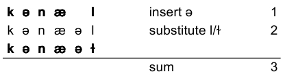
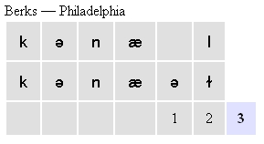

String edit distance (also called Levenshtein distance) is applicable when the dialect data comprises transcriptions of lexical items. The string edit distance determines the distance between two different pronunciations of a lexical item by finding the smallest cost for changing one pronunciation into the other. Changing one pronunciation into the other is done by inserting, deleting or substituting characters.
When using string edit distance, the linguistic distance between two dialects/varieties is first calculated separately for all lexical items in the data set. Subsequently, the aggregate distance between the two dialects is calculated as the average of the item distances.
A choice can be made between different implementations of the string edit distance:
Reference(s): Kessler 1995, Kruskal 1999, Gooskens and Heeringa 2004, Heeringa 2004, Prokić 2010
This is the simplest form of edit distance. All symbols in the transcriptions are treated similarly. Insertions and deletions have a cost of 1 and substitutions a cost of 2 (since a substitution can be considered a deletion plus an insertion).
Example:
Two pronunciations of the word 'canal' are [kənæl] and [kənæəɫ]. Using string edit distance the distance between the two pronunciations would be calculated like this
The sum of all the operations is 3, and hence, the linguistic distance is 3. When you inspect the alignments in the alignment view in Gabmap, the intermediate operational steps will not be shown, but you will see an alignment like this:
The cost for each operation is showed under the alignment, with the total cost at the end.
In tokenized processing, diacritics are not treated as separate symbols like in the plain processing, but as modifiers of the vowel or consonant they follow. So there is a preprocessing step taking place, where each unique combination of vowel or consonant and the following diacritics are combined into a single unique token. String edit distance is then applied to strings of these new tokens. All the tokens in a specific Gabmap project are listed under Data inspection > data overview > Token list.
Insertions, deletions and substitutions all have a cost of 1 in tokenized processing. But, if a vowel is substituted by a consonant, or a consonant by a vowel, the substitution cost will be 2. This is done in order to get linguistically more meaningful alignments. It is more probable that a vowel will align with another vowel than with a consonant. A number of characters have been defined as semi-vowels which are allowed to align with both vowels and consonants. The classification into vowels, consonants and semi-vowels is applicable to IPA-like transcriptions. The complete list with classification of characters is available here.
A substitution of tokens where the base character is the same and the only difference is in diacritics has a cost of 0.5.
coming up...